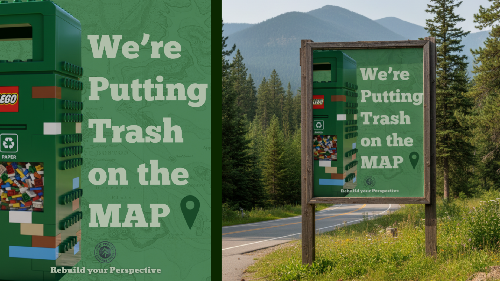
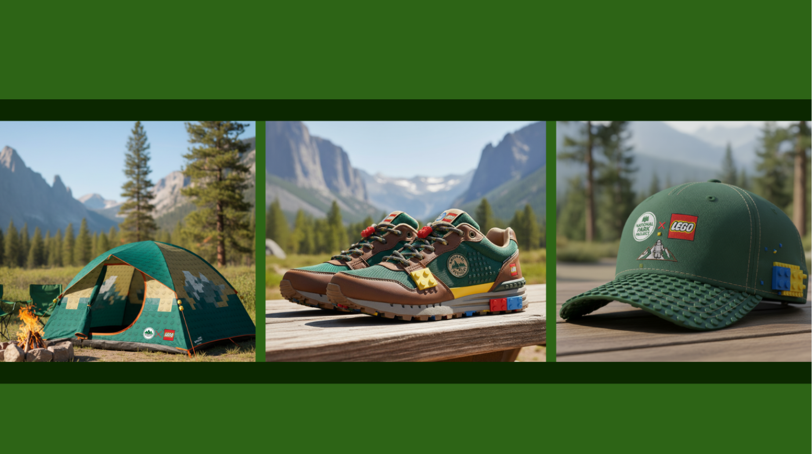
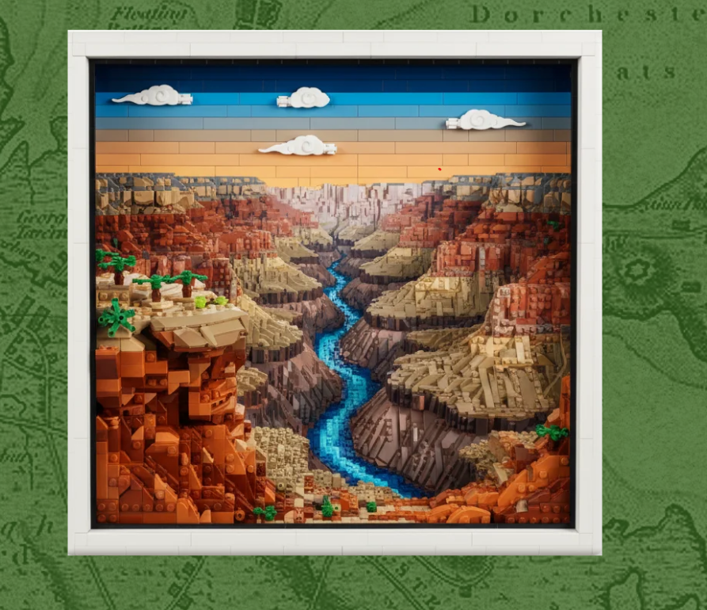

LEGO × National Parks
Turning conservation into something you can build, share and protect.

Make conservation feel playable.
Environmental action can feel distant and abstract. The campaign reframed national parks through a language built for curiosity: the tactile, optimistic world of LEGO.

Build wonder before asking for action.
The experience meets audiences across social, outdoor, digital and physical touchpoints—using play as the entry point and care for real landscapes as the lasting message.
Real landscapes, rebuilt in imagination.
An interactive app feature transforms national-park scenery into LEGO-style worlds, inviting visitors to see familiar terrain with fresh attention and share their own point of view.

One idea, built across every surface.
Social stories, OOH concepts, campaign visuals and merchandise extend the same visual logic beyond the screen—turning a collaboration into a connected brand experience.
From thought
to touchpoint.
- Campaign identity
- Social system
- OOH concepts
- Interactive app concept
- Merchandise
“A partnership becomes powerful when each brand changes how the other is understood: LEGO makes nature feel participatory; the parks give play a purpose.”